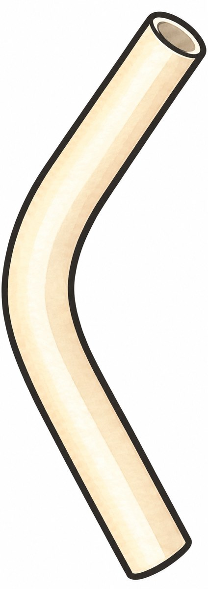
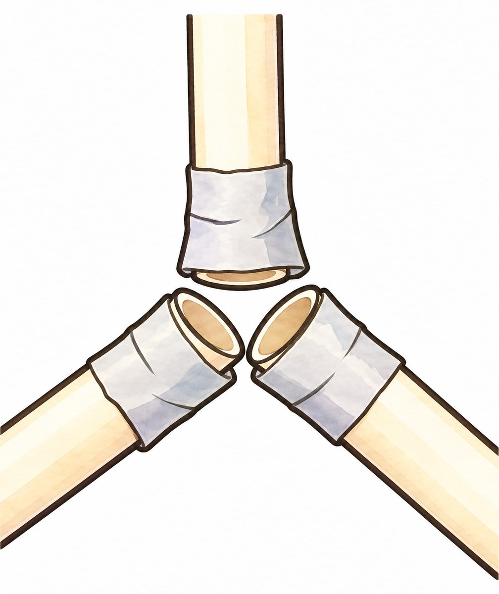
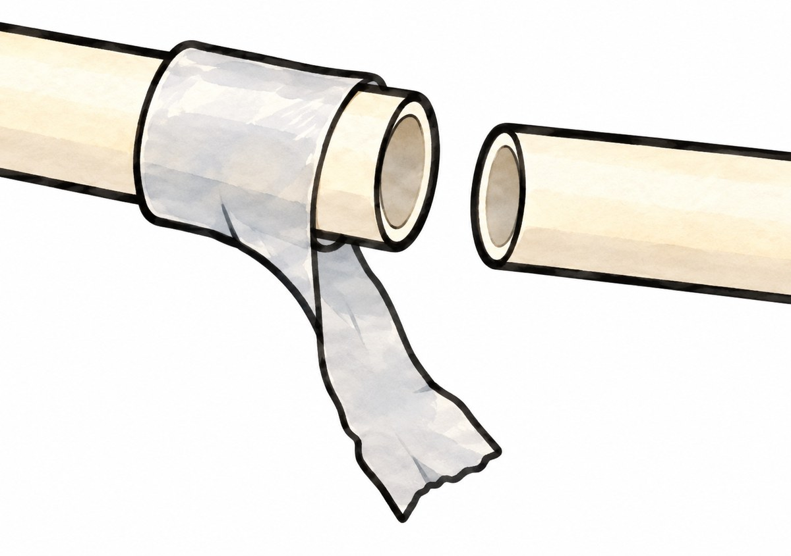
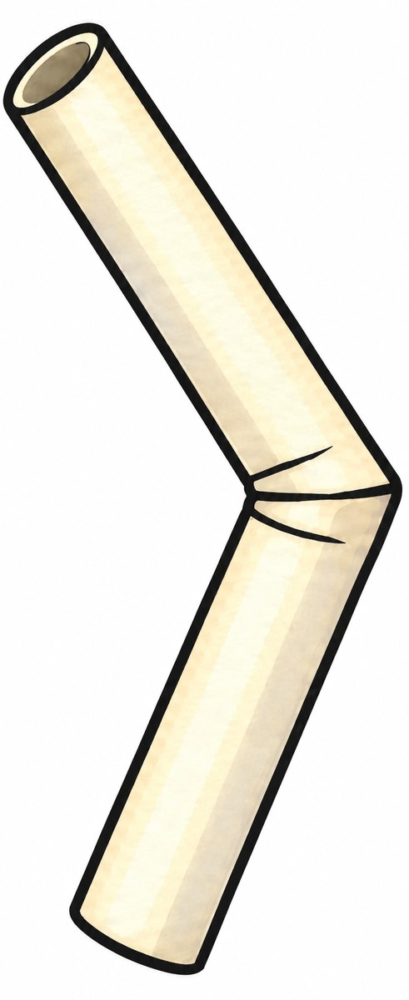
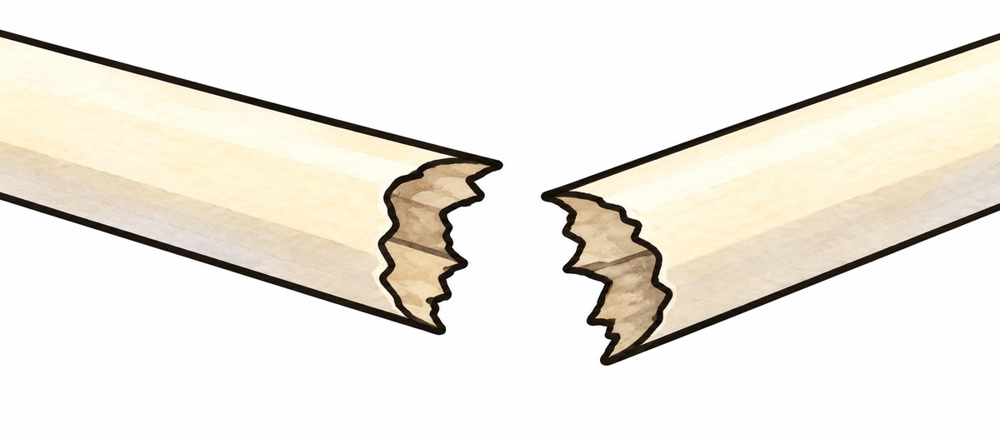

2차시 · 벡터를 활용한 구조물 설계와 힘의 해석
오늘은 해석하고, 예측하고, 관찰한다
- 해석지 · 15분
모든 학생에게 해석 시간 최소 10분 보장
- 예측·실험지 1번 · 5분
- 하중 실험 · 2번 · 20분
- 기록 정리 · 5분 + 여유 5분
왼쪽 아래 시간 숫자를 눌러 시작·멈춤. ↺는 다시 맞춤.
2차시 · 해석지
이음점 하나를 골라 시작한다
- 승인된 V1에서 이음점 하나를 고른다.
- 웹앱이 준 값을 고치지 않고 그대로 옮겨 적는다.
- 그 이음점에 대해 해석지 1번을 각자 작성한다.
해석 요청은 한 사람당 2회
하나는 해석지에, 다른 하나는 예측 근거 등에 사용
웹앱 접속 · 교사 안내: ______
2차시 · 해석지
웹앱 출력과 나의 판단을 구분한다
‘웹앱이 준 해석’ 칸 → 출력 그대로
해석지 1번 → 나의 그림·계산·판단
웹앱이 준 막대의 힘 가운데 하나에는 오류가 있다.
하중과 받침이 주는 힘은 맞는 값이다.
선택한 이음점에 대해 학습지의 순서대로 작성한다.
해석지는 예측·실험지와 함께 수업 끝에 제출한다.
2차시 · 예측·실험지 1번
하중을 가하기 전에 예측부터 쓴다
- 먼저 변할 것으로 예상하는 곳 한 곳을 쓴다.
이음점이나 막대의 이름 + 예상하는 변화 모습
- 힘의 방향·크기 또는 크기 차이로 이유를 쓴다.
해석지에서 바로잡은 결과 또는 두 번째 이음점 해석 사용
- 교사 확인 뒤 하중 실험을 시작한다.
실험 뒤에는 예측을 고쳐 쓰지 않는다.
2차시 · 예측과 관찰에 쓰는 말
변화 모습은 이렇게 구분하여 쓴다

막대가
휨

이음점이
벌어짐

연결이
빠짐

막대가
꺾임

막대가
끊어짐
예측과 관찰 기록에서 같은 말로 변화 모습을 표현한다.
2차시 · 하중 실험 준비
실험 조건과 안전 안내를 먼저 확인한다
하중 도구 · 교사 안내: ______
하중 증가 단위 · 교사 안내: ______
힘 환산값 · 교사 안내: ______
안전 수칙 · 교사 안내: ______
중단 기준 · 교사 안내: ______
예측 확인과 실험 안내가 끝난 뒤 시작한다.
2차시 · 예측·실험지 2번
한 단계씩 관찰하며 기록한다
- 교사가 안내한 조건으로 하중을 가한다.
- 각 단계의 판 위 전체 하중을 확인한다.
- 변화가 나타난 위치와 모습을 관찰·기록한다.
- 정해진 증가 단위로 반복하고,
중단 기준에 따라 멈춘다.
질량을 읽었다면 교사가 안내한 힘 환산값($\mathrm{N}$)을 쓴다.
2차시 · 실험 관찰 기록
단계·하중·위치·모습을 구분한다
- 변화가 없는 단계도 기록한다.
- 하중값은 모둠 공통 기록을 써도 된다.
위치와 모습은 각자 기록한다.
- 처음 뚜렷한 변화의 단계·위치·모습을 쓴다.
끝까지 변화가 없다면 관찰한 하중 범위와 멈춘 이유를 쓴다.
2차시 · 기록 정리와 제출
각자 기록을 마무리하여 제출한다
- 해석지: 웹앱 출력과 나의 해석 기록 확인
- 예측·실험지: 실험 전 예측 원본 유지
- 실험 기록: 단계별 하중·위치·모습 확인
- 3번: 해석 준비와 실험에서 직접 한 일 작성
- 확인이 필요했던 일과 처리 방법 작성
그런 일이 없었다면 확인한 절차 작성
해석지 + 예측·실험지를 함께 제출한다.
기록 정리 5분 · 여유 5분은 교사 안내에 따라 사용한다.